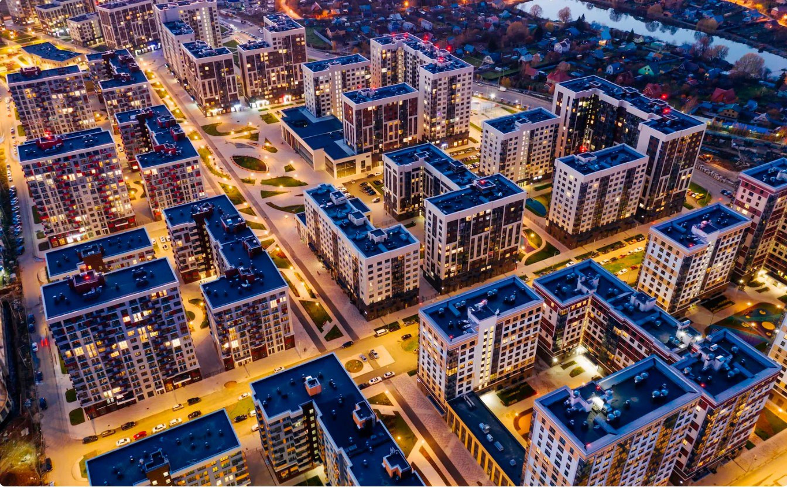
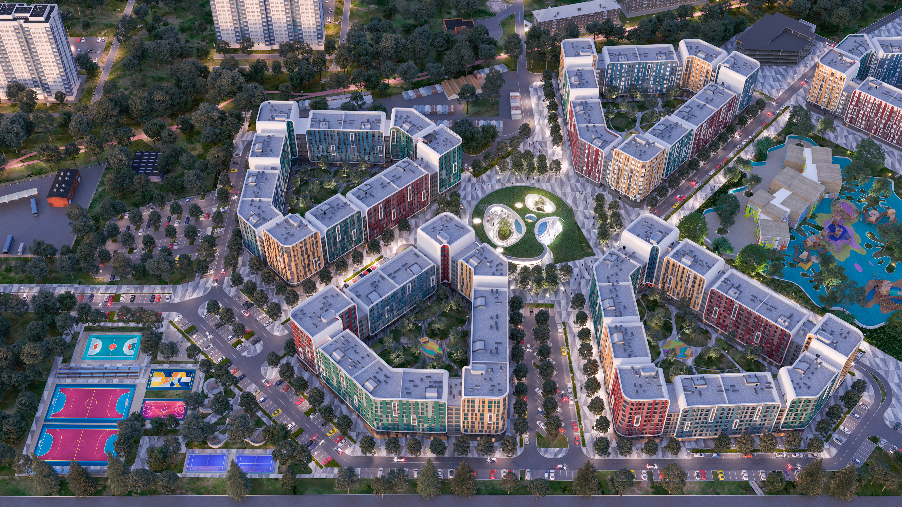
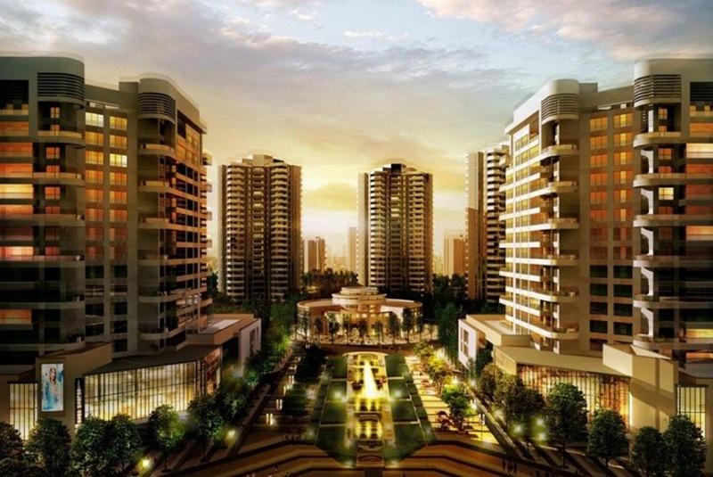
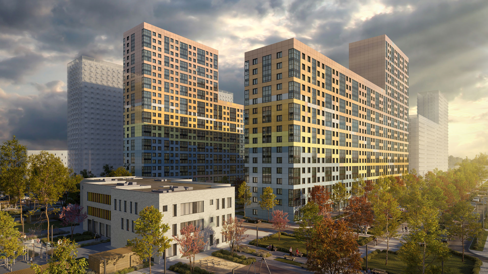
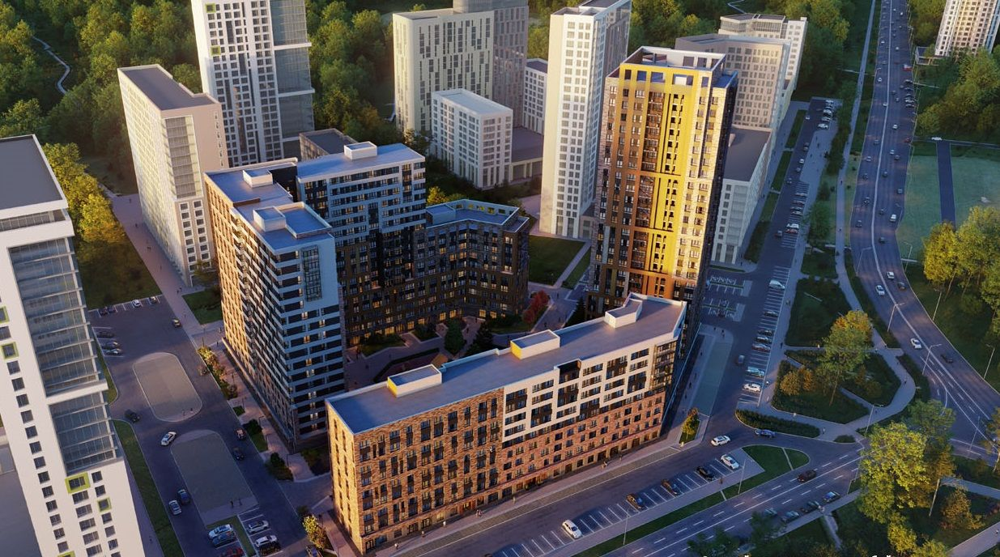

Наши объекты
Информация о наших объектах




Жилой комплекс Бульвар
Расположен в Обручевском районе Юго-Западного административного округа Москвы, на улице Академика Волгина, владение 2. Строительство ведётся на месте бывшего бетонного завода компании ГК «Партнёр». Площадь застройки составляет 1,69 га.Инфраструктура
Территория комплекса с севера ограничена улицей Обручева, а с юга к ней примыкает студенческий городок Губкинского университета нефти и газа. Ближайшие станции метро — «Калужская» и «Воронцовская», до них около 14 минут пешком или на общественном транспорте. В самом комплексе планируется строительство детского сада на 75 мест, супермаркета, фитнес-клуба, аптеки, салона красоты и ресторана.Архитектура и дизайн
Фасады ЖК «Архитектор» выполнены в виде объёмных геометрических панелей, которые создают визуальный эффект многослойности зданий. Они выполнены с чередованием фактур: меди, матового металла и травертина — декоративного отделочного камня. Такое решение вдохновлено творчеством художника Маурица Эшера. Всего в комплексе будет 1421 квартира площадью от 29 до 252 м². Есть варианты от студий до многокомнатных пентхаусов и двухуровневых квартир. Предлагается 64 вида планировок: как традиционных, с квадратными и прямоугольными помещениями, так и нестандартных, с выступающими углами комнат и лоджий, а также с угловым остеклением. Высота потолков в квартирах составляет 3,15 м. В планировках предусмотрены гардеробные, мастер-спальни с отдельным санузлом и помещения для постирочных. Квартиры предлагаются с отделкой white box или с готовой авторской отделкой в одном из двух стилей: классическом или современном.Транспортная доступность
Ближайшие станции метро — «Калужская» и «Воронцовская», до них около 14 минут пешком или на общественном транспорте.Сроки сдачи
Строительство ЖК «Архитектор» планируется завершить в IV квартале 2025 года.  ЖК "ChinaTown"Жилой комплекс «Зелёный квартал»
Расположен в экологически чистом районе города, окружённом зелёными насаждениями и парками. Комплекс состоит из нескольких многоэтажных домов, построенных с использованием современных технологий и материалов.Инфраструктура
На территории комплекса расположены детские и спортивные площадки, зоны отдыха и прогулок, а также магазины, кафе и другие объекты инфраструктуры. В шаговой доступности находятся школы, детские сады, поликлиники и другие социальные учреждения.Архитектура и дизайн
Здания комплекса выполнены в современном стиле с использованием натуральных материалов и цветов. Фасады домов украшены зелёными насаждениями, что создаёт ощущение гармонии с окружающей природой.В комплексе представлены квартиры различных планировок и площадей, от небольших студий до просторных многокомнатных квартир. Все квартиры оборудованы современными инженерными системами, включая системы отопления, вентиляции и кондиционирования воздуха.Транспортная доступность
Жилой комплекс расположен в удобном месте с хорошей транспортной доступностью. Рядом с комплексом проходят основные магистрали города, что позволяет быстро добраться до любой точки города. Также в непосредственной близости находятся остановки общественного транспорта.Cроки сдачи
Строительство жилого комплекса «Зелёный квартал» планируется завершить в установленные сроки, согласно проектной документации.  ЖК "Улисс 360"Жилой комплекс «Улисс 360»
Жилой комплекс «Солнечный берег» расположен в живописном месте на берегу реки, окружённом зелёными насаждениями и парками. Комплекс состоит из нескольких малоэтажных домов, построенных с использованием экологически чистых материалов и технологий.Инфраструктура
На территории комплекса расположены детские и спортивные площадки, зоны отдыха и прогулок, а также магазины, кафе и другие объекты инфраструктуры. В шаговой доступности находятся школы, детские сады, поликлиники и другие социальные учреждения.Архитектура и дизайн
Здания комплекса выполнены в современном стиле с элементами традиционной архитектуры. Фасады домов украшены деревянными элементами и зелёными насаждениями, что создаёт ощущение уюта и комфорта. В комплексе представлены квартиры различных планировок и площадей, от небольших студий до просторных многокомнатных квартир. Все квартиры оборудованы современными инженерными системами, включая системы отопления, вентиляции и кондиционирования воздуха.Транспортная доступность
Жилой комплекс расположен в удобном месте с хорошей транспортной доступностью. Рядом с комплексом проходят основные магистрали города, что позволяет быстро добраться до любой точки города. Также в непосредственной близости находятся остановки общественного транспорта.Сроки сдачи
Строительство жилого комплекса «Солнечный берег» планируется завершить в установленные сроки, согласно проектной документации.